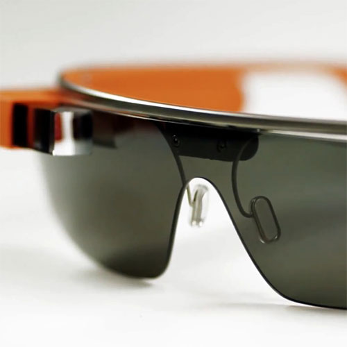
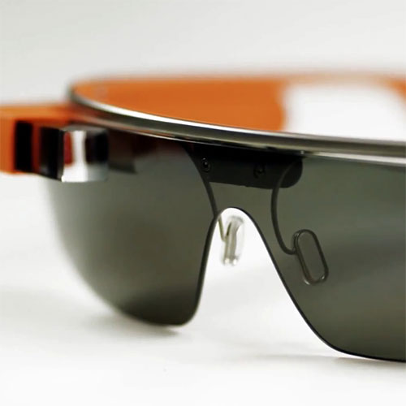

Glass > Fotos
por Gustavo Guanabara
Atualizado em 23/Abril/2013
Veja na nossa galeria de fotos várias belas imagens que mostram algumas das principais características do Google Glass, como recursos e propriedades que estão impressionando o mundo inteiro. Basta passar o mouse sobre uma das fotos para ver uma versão ampliada e com uma breve descrição.


 


Copyright 2013 - by Gustavo Guanabara
Facebook | Twitter